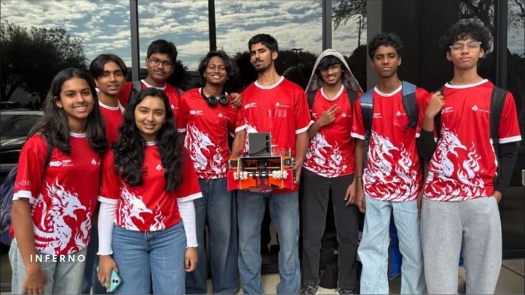
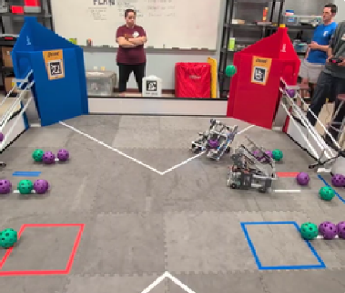
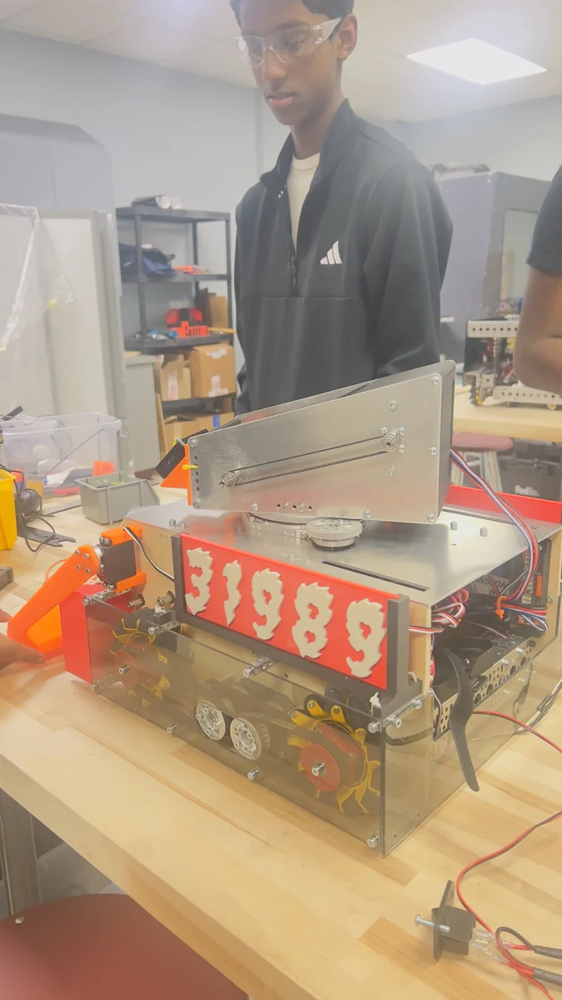
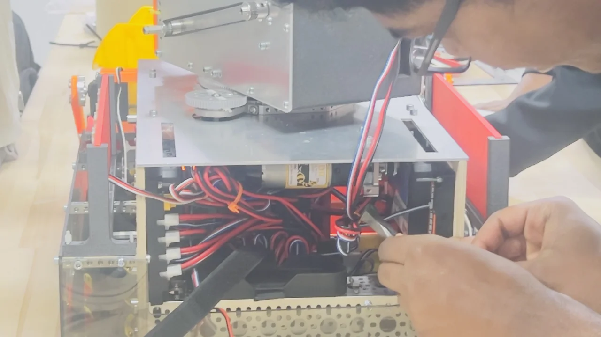
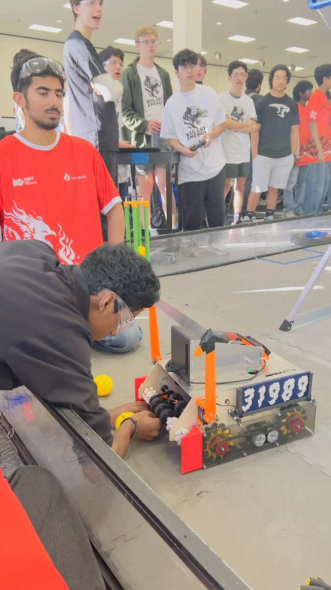
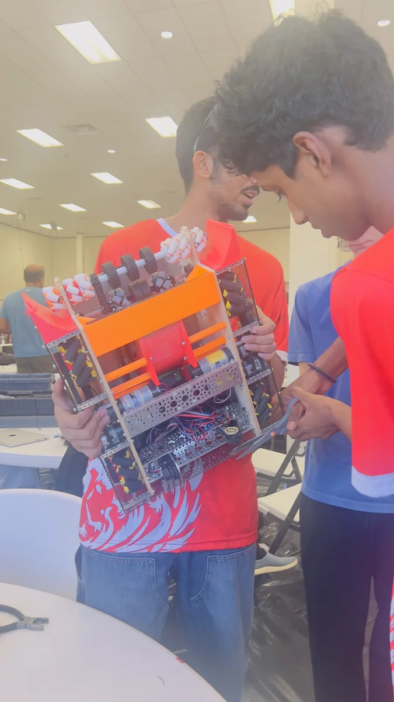
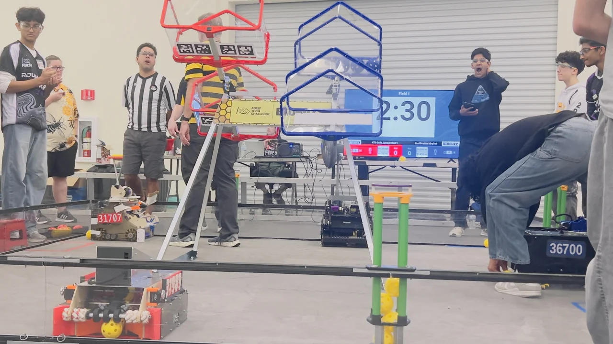
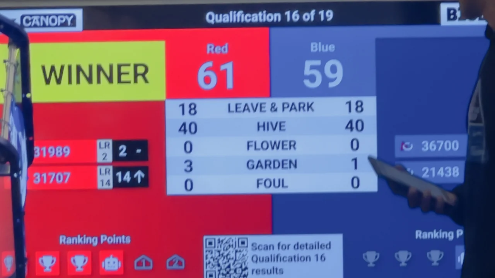

Our Journey
From restarting robotics at Rouse High School to taking the field as Inferno. Follow Team 31989 through our league meets, the work between them, and the growth of our club.


2025–26 DECODE
Rouse High School revived its robotics program with two FTC teams. We entered as Raiders of the Resistance (31989) alongside Robo Raiders (31707).
-
SWAT Recon Meet 1
Our first official meet set a baseline. Our highest alliance score that day was 99 points in a 99–71 win in Qualification 11.
Meet 1 results -
SWAT Recon Meet 2
The two Rouse teams drove on the same alliance in Qualification 23 and closed the meet with a 114–103 win.
Meet 2 results -
SWAT Recon Meet 3
We partnered with Saber Robotics for a 150–41 win in Qualification 6. It was our highest alliance score across the three Recon meets.
Meet 3 results -
SWAT League Tournament
Team 31989 earned second place for the Think Award for its engineering documentation. Team 31707 earned second place for the Connect Award for outreach and advanced to Semi-Regionals.
Tournament awards



How the club grew
Over the summer, we connected with mentors and sharpened our skills. Rouse added Riptide (36700), bringing the program to three teams and more than 36 members. Team 31989 became Rouse Inferno, Team 31707 became Rouse Vortex, and Inferno expanded its outreach to mentor younger FIRST LEGO League teams.
2026–27 BIOBUZZ
We brought Full Bot to the Central Austin Robotics League. The photos follow the robot from the workbench to the field.
-
The day before the meet
On the workbench, we checked wiring and worked on Full Bot before its league debut.

Full Bot at the workbench 
Checking the electronics -
CARL League Meet 1
All three Rouse teams shared the field at the Austin STEM Center in Qualification 16. Inferno and Vortex won 61–59 on red, with Riptide playing on blue alongside Chaotic Current.
CARL Meet 1 results
Ready at the field boundary 
A closer look between matches 
The BIOBUZZ field 
The 61–59 Qualification 16 result